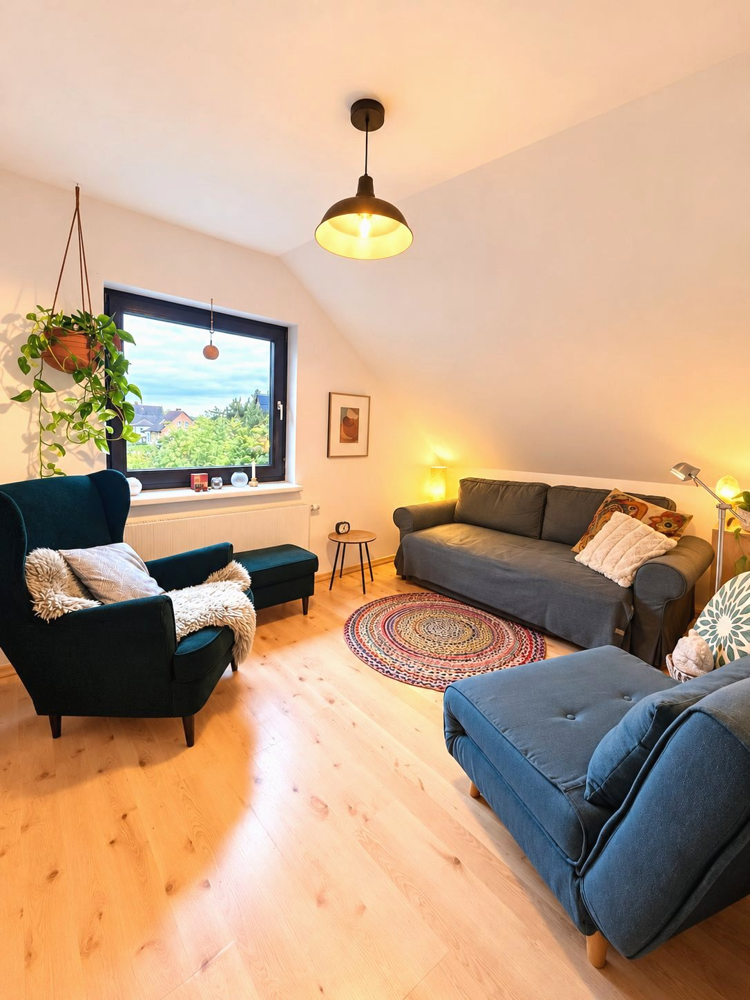
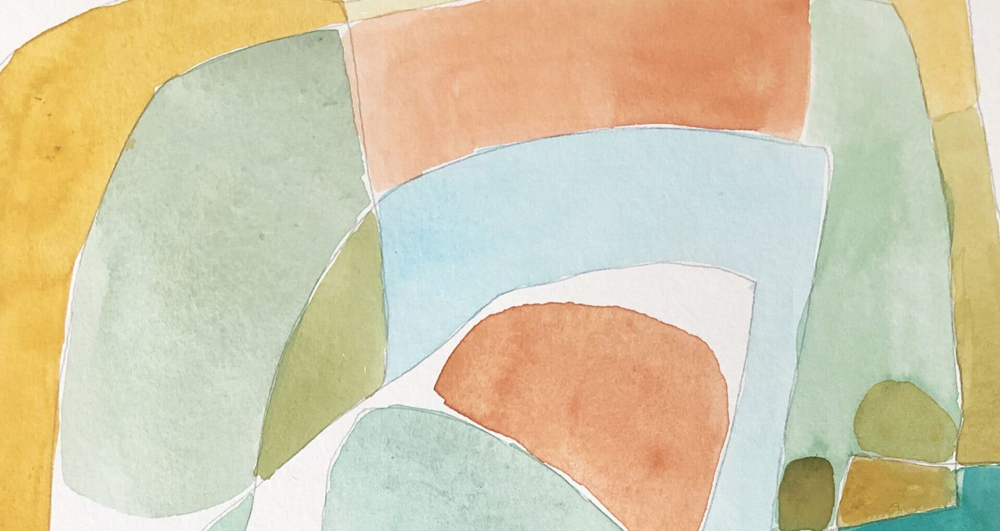
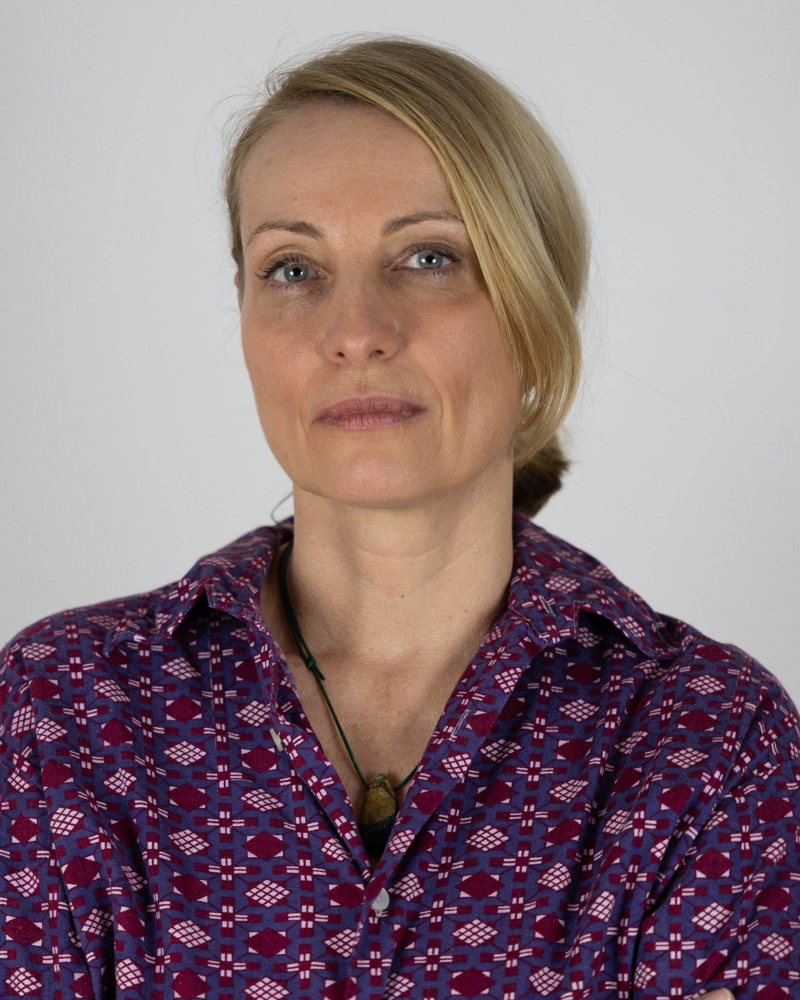

Somatic Experiencing® in Wismar und online
Raum für das, was Worte nicht erreichen.
Sie haben schon viel verstanden. Und trotzdem holen alte Gefühle und Muster Sie immer wieder ein? Mit Somatic Experiencing beziehen wir den Körper ein, dort, wo alte Reaktionen gespeichert sind. In Ihrem Tempo, in kleinen, sicheren Schritten.
Kristin Damaschke · Somatic Experiencing® in Ausbildung · Heilpraktikerin für Psychotherapie · Kunsttherapeutin (M.A.) · viele Jahre Erfahrung in Kliniken
Wofür
Vielleicht erkennen Sie sich wieder
Viele, die zu mir kommen, stehen mitten im Leben. Sie sind beruflich erfolgreich, reflektiert, oft therapieerfahren. Und merken doch: Etwas in mir reagiert schneller, als ich denken kann.
„Ich weiß, woher es kommt. Und trotzdem passiert es wieder.“
Alte Muster, die wiederkehren
Wenn Einsicht allein nicht reicht: Wir arbeiten dort, wo alte Reaktionen gespeichert sind: im Körper und im Nervensystem.
Mehr dazu„Ich funktioniere. Aber ich komme nicht mehr zur Ruhe.“
Stress und Erschöpfung
Ein dauerhaft angespanntes Nervensystem kann lernen, wieder zwischen Anspannung und Entspannung zu pendeln.
Mehr dazu„Darüber zu reden, war mir bisher zu viel.“
Belastende Erfahrungen
Traumasensibel heißt: Sie müssen nichts noch einmal durchleben. Wir gehen behutsam vor und bleiben bei dem, was Sie tragen können.
Mehr dazu
Mein Ansatz
Was hier anders ist als im Gespräch allein
Nicht noch einmal erzählen, sondern spüren, was sich verändern möchte.
- Der Körper spricht mitMit Somatic Experiencing achten wir auf Empfindungen, Atem und Haltung. So kann sich lösen, was der Kopf längst verstanden hat.
- Sicherheit zuerstWir beginnen bei Ihren Kraftquellen und pendeln behutsam zwischen Belastendem und Stärkendem. Tempo und Tiefe bestimmen Sie.
- Farbe, wo Worte fehlenManchmal hilft ein Bild weiter, wo Sprache nicht hinreicht. Aus meiner Erfahrung als Kunsttherapeutin fließt das ein, wenn es passt. Malen können müssen Sie nicht.


Über mich
Ernstes darf auch leicht werden.
Ich bin Kristin Damaschke, Heilpraktikerin für Psychotherapie, Kunsttherapeutin und in Ausbildung zur Somatic-Experiencing-Practitioner. Seit 2021 lebe und arbeite ich bei Wismar.
Auch wenn es um schwere Themen geht: In meinen Stunden darf gelacht werden. Leichtigkeit ist kein Gegensatz zu Tiefe, oft ist sie ein Zeichen, dass sich etwas löst.
Viele Jahre habe ich in psychiatrischen und psychosomatischen Kliniken gearbeitet, unter anderem in den Sana Kliniken Lübeck und im Klinikum Schloss Lütgenhof. Dort habe ich erlebt, wie viel sich bewegt, wenn Menschen einen Zugang jenseits der Worte finden. Heute arbeite ich vor allem körperorientiert mit Somatic Experiencing.
Angebot
Einzeln, in Wismar oder online
- 50 Minuten
Somatic Experiencing
90 € je Sitzung
Traumasensible, körperorientierte Einzelsitzungen (Psychotherapie nach dem Heilpraktikergesetz).
- 50 Minuten
Nervensystemregulation
90 € je Sitzung
Anti-Stress-Begleitung, um wieder in Balance zu kommen. Auch bei Neurodivergenz.
- 50 Minuten
Coaching
120 € je Sitzung
Für berufliche und persönliche Fragen, mit Körper und Bild statt nur mit Strategie.
Lernen wir uns kennen.
Ein erstes Gespräch am Telefon dauert etwa 15 Minuten. Sie erzählen kurz, was Sie bewegt, und wir klären, ob meine Arbeit zu Ihnen passt. Ganz ohne Verpflichtung.